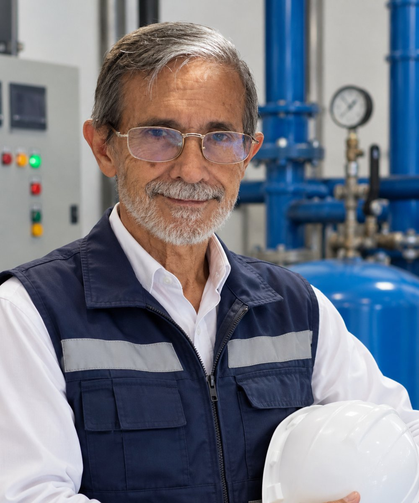
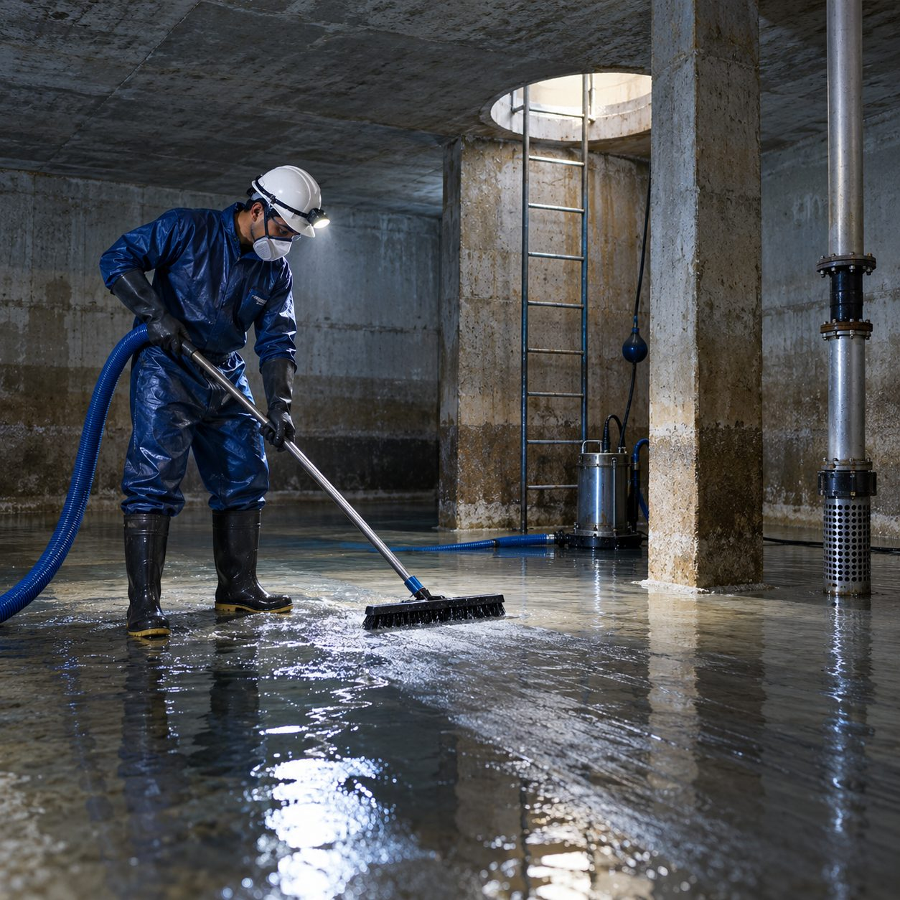
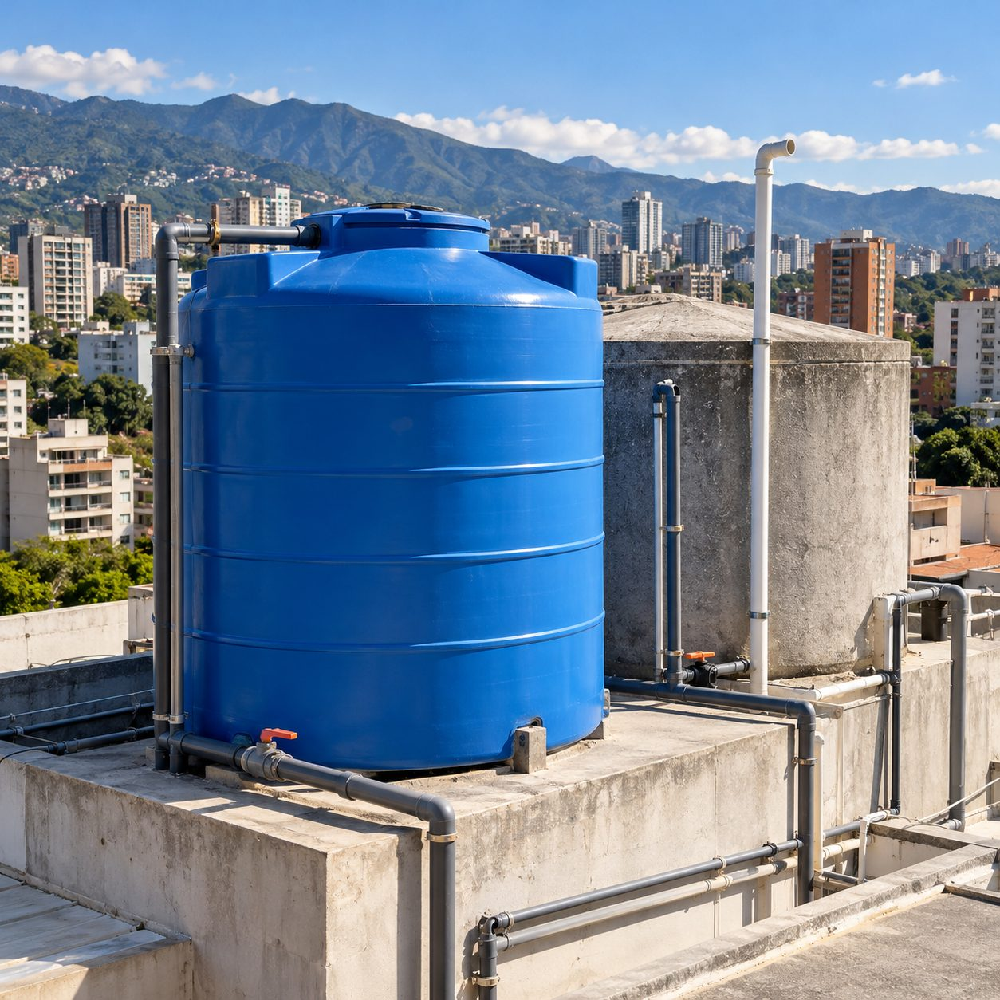
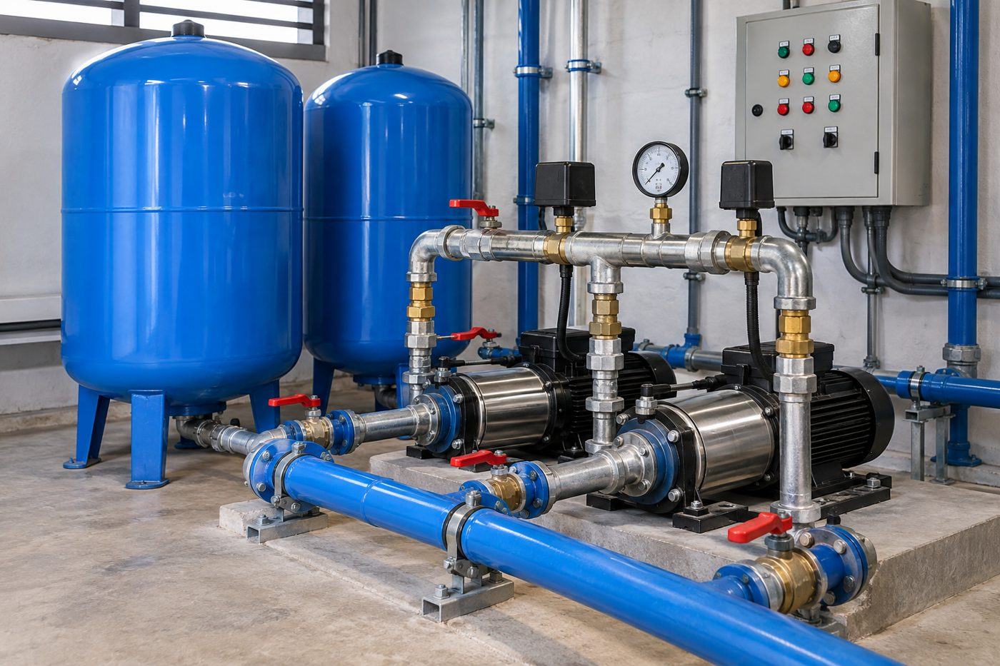
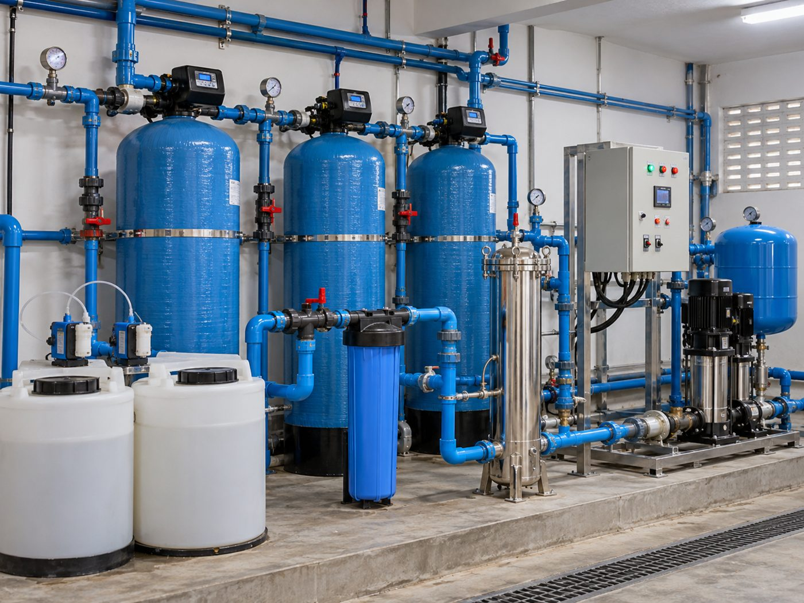
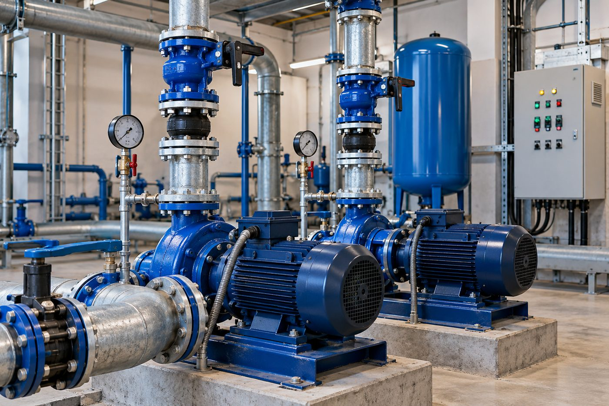
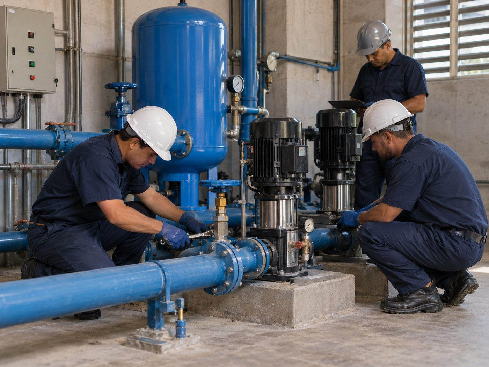

Limpieza de tanques subterráneos y aéreos
Limpieza y desinfección de tanques de almacenamiento en edificios residenciales, coordinando el trabajo para minimizar las molestias a los residentes.
Somos CRIPECA, equipo de ingeniería hidráulica y civil en Caracas, dirigido por el Ing. Juan Caloca. Limpieza de tanques, sistemas hidroneumáticos y plantas de tratamiento de agua, con respaldo profesional.
Soluciones completas de ingeniería hidráulica para edificios, conjuntos residenciales, comercios e industrias.
Cuéntanos tu caso por WhatsApp y te preparamos una cotización.
Cotizar ahoraDetrás de CRIPECA hay más de tres décadas de ingeniería aplicada al agua. Cada trabajo se planifica y supervisa bajo la dirección de nuestro ingeniero principal.

Ingeniero hidráulico con más de 30 años de trayectoria en ingeniería civil e hidráulica. Ha ejecutado grandes obras en distintas regiones del país y ha dirigido equipos técnicos y de campo, llevando esa experiencia a cada proyecto de CRIPECA, desde la limpieza de un tanque hasta una planta de tratamiento.
Además de su práctica profesional, es profesor de la Universidad Central de Venezuela (UCV), una combinación de experiencia en obra y rigor técnico que se refleja en la forma en que diagnosticamos, proponemos y ejecutamos.
Lo que respalda nuestro trabajo y la forma en que lo hacemos.
Revisamos las instalaciones antes de proponer el trabajo.
Te explicamos qué se hará, cómo y en qué orden.
Trabajamos procurando minimizar las molestias a los residentes.
Te orientamos para planificar labores futuras y evitar fallas.
Una muestra de nuestro trabajo en campo.






Los tipos de proyecto que atendemos con más frecuencia en edificios y conjuntos residenciales de Caracas.
Limpieza y desinfección de tanques de almacenamiento en edificios residenciales, coordinando el trabajo para minimizar las molestias a los residentes.

Diagnóstico de presión y bombeo, mantenimiento, reparación y reemplazo de equipos para lograr un suministro de agua estable en el edificio.

Revisión, tratamiento y mantenimiento de redes y sistemas de agua del edificio, con recomendaciones para planificar labores preventivas.

Un solo equipo para coordinar la limpieza de tanques, la mejora del sistema hidroneumático y el mantenimiento de las instalaciones hidráulicas.
Las ilustraciones son referenciales; las fotos de trabajos reales se muestran al agregarlas en la carpeta de imágenes.
Cuéntanos tu caso y te preparamos una cotización.
Cotizar por WhatsAppInformación breve y práctica sobre el agua en tu edificio, con las fuentes en las que nos basamos.
El tanque es el último lugar por donde pasa el agua antes de llegar a cada apartamento. Si en él se acumulan sedimentos y materia orgánica, el agua que sale ya no es la misma que entró.
Un informe presentado ante la ONU por organizaciones de calidad del agua en Venezuela describe cómo la materia orgánica que llega por la red se asienta en tuberías y tanques de las viviendas y allí se descompone, lo que explica quejas por olor, sabor, turbidez y color. Por otro lado, la OMS advierte que los riesgos de salud en los sistemas de agua de edificios, incluidos los bloques de apartamentos, son prevenibles y controlables con un buen diseño y gestión. Los CDC de EE. UU. señalan que un programa de gestión del agua, que incluya control de temperatura y niveles de desinfectante, es la estrategia principal para controlar bacterias como Legionella.
En la práctica: la limpieza periódica de tanques, subterráneos y aéreos, forma parte de un programa de mantenimiento preventivo. La frecuencia adecuada depende de cada edificio y se define tras una inspección.
En 2019, The New York Times publicó una investigación para la cual investigadores de la UCV analizaron 40 muestras de los principales sistemas de agua de Caracas. Un tercio no cumplió las normas nacionales. En el sistema principal, que abastece cerca del 60 % del agua de la ciudad, más de la mitad de las muestras tenía poco cloro y casi dos tercios superaba los niveles de bacterias permitidos.
La investigación también recogió testimonios de gerentes de la compañía de agua sobre abandono de bombas y plantas de tratamiento por falta de fondos y personal capacitado.
Qué significa para tu edificio: no controlamos lo que llega por la tubería, pero sí lo que ocurre dentro del edificio. Tanques limpios, un buen sistema de bombeo y, cuando corresponde, tratamiento del agua son medidas que están en manos de la comunidad.
Nota: los datos corresponden a 2019. La situación puede variar según la zona y el momento.
Un sistema hidroneumático combina bombas con un tanque presurizado que guarda una reserva de agua. Según fabricantes e ingenieros del sector, esto aporta varias ventajas:
Para edificios altos esto se traduce en presión pareja en los pisos superiores y menos desgaste del equipo.
Antes de pensar en reemplazar equipos, conviene revisar lo básico. Estos son los puntos que la literatura técnica destaca:
Recomendación: una evaluación técnica permite identificar si basta con un ajuste, una reparación o si conviene modernizar el equipo.
Un variador de frecuencia (VFD) ajusta la velocidad del motor de la bomba según la demanda, en lugar de encenderla y apagarla. Entre sus ventajas están:
Combinado con un tanque hidroneumático y controles automáticos, es una forma de modernizar el cuarto de bombas. Los resultados dependen de cada instalación, por lo que conviene evaluarla antes de invertir.
Estos artículos son informativos y resumen las fuentes citadas. Cada edificio tiene condiciones propias: para decisiones técnicas, solicita una evaluación.
Escríbenos y coordinamos una evaluación y cotización para tu edificio.
Pedir cotizaciónCotizar es fácil y sin compromiso. Atendemos en Caracas y zonas cercanas.
WhatsApp: +58 424-1619729